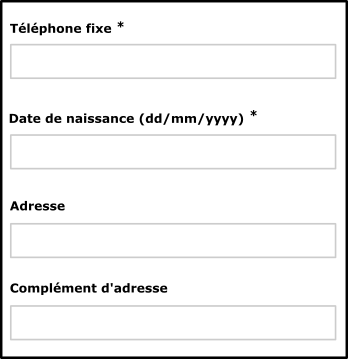
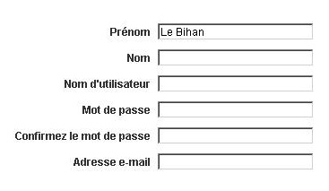
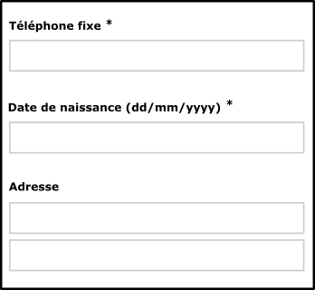
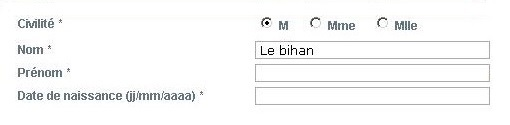
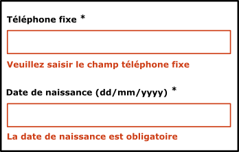
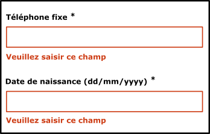

Web développer - Formulaires
S’assurer que l’utilisateur puisse efficacement compléter les formulaires
Rendre accessibles les champs de formulaire #
Cible : tout le monde, et en particulier les personnes déficientes visuelles et cognitives, avec un déficit d’attention et les utilisateurs de tactiles (mobile et tablette).
Quand : lors de la conception et lors du développement.
Description :
Chaque champ de formulaire doit être accompagné d’un libellé ou d'instructions permettant d’identifier le rôle du champ, le type de donnée et le format attendu.
Ces informations doivent être proches visuellement du champ afin que l'utilisateur fasse facilement le lien entre eux (notamment pour les utilisateurs de zoom, de loupe logicielle, voire sur mobile).
Chaque libellé (ou instructions) doit être inclus dans une balise label, elle-même associée au champ de formulaire grâce à un attribut for renseigné, reprenant la valeur de l’id du champ.
Dans certains cas, il semble inutile d’accompagner le champ de formulaire d’un libellé car son rôle est évident (champ de recherche accompagné d’un bouton en forme de loupe par exemple, case à cocher pour sélectionner une ligne dans un tableau de données). Dans ce cas, prévoir au minimum un attribut title. Un libellé peut être également ajouté (reprenant la valeur du title), celui doit être associé au champ de formulaire et rendu invisible à l’écran (utiliser une classe de masquage accessible).
À noter que l’attribut title positionné sur une balise de champ de formulaire fait office de libellé tout comme les attributs aria-label et aria-labelledby (cf. les attributs ARIA qui peuvent vous sauver) dans cet ordre de préférence.
L'attribut autocomplete doit être présent et pertinent pour tous les champs listés dans 7. Input Purposes for User Interface Components.
À vérifier :
S’assurer que le libellé du champ (étiquette) est suffisamment proche du champ associé.
Aligner tous les libellés à gauche lorsque le nombre de caractères séparant le libellé le plus long de celui le plus court ne dépasse pas 6 caractères ; au-delà, aligner tous les libellés à droite.
Si cela est pertinent, les champs ont un attribut autocomplete afin que l’utilisateur ait la possibilité d’utiliser une liste de propositions pré-enregistrées ou en auto-complétion.
Pour les boutons radio et les cases à cocher, l’utilisation de la balise label est, parfois, à compléter par un autre dispositif (title, aria-labelledby, aria-label ou parfois, fieldset et legend).
Pour les champs obligatoires, ceci doit être précisé dans le label via un texte explicite ("obligatoire"), si cette identification n'est pas réalisée de manière explicite, il faut en expliquer la signification comme, "Tous les champs obligatoires sont marqués d'un *", placée en début de formulaire, et/ou une propriété aria-required, required.
Objectif utilisateur :
Ne pas respecter ces recommandations est un point bloquant pour tout utilisateur de synthèse vocale mais aussi de loupe logicielle car il ne sait pas quelles valeurs entrer dans les champs. Pour les utilisateurs de mobiles et les déficients moteurs, cela permet d’activer ou de cliquer plus facilement sur les éléments de formulaire.
Pour les champs avec auto-complétion, facilite la tâche aux déficients moteur et cognitif, les dyslexiques. Cela permet d’éviter les erreurs de saisie et un gain de temps pour tous.
Exemples valides :


Exemples non-valides :


Exemple de formulaire accessible :
Consulter l’exemple de formulaire accessible pour plus d’informations.
Référence WCAG :
Détecter, identifier les erreurs et suggérer des corrections #
Cible : tout le monde, et en particulier les personnes déficientes visuelles, cognitives, avec des difficultés pour lire ou ayant un déficit d’attention et les seniors.
Quand : lors de la conception et lors du développement.
Description :
Les erreurs sont automatiquement détectées, l’utilisateur est averti par la modification du titre de la page, l’élément de formulaire en erreur est identifié et l’erreur est décrite à l’utilisateur sous forme de texte. Si besoin, une correction est suggérée.
Les libellés des messages d’erreur doivent être explicites.
Pour les pages Web qui entraînent des actions importantes (engagement juridique, transaction financière, modification ou effacement de données importantes, réponse à un test ou examen...), l'action doit être réversible ou passer par une étape de confirmation permettant de vérifier ou rectifier la saisie en cas d'erreur.
À vérifier :
L’identification du champ en erreur ainsi qu’une éventuelle suggestion de correction peuvent être ajoutées dynamiquement à la balise label, en priorité, mais aussi à l’attribut title ou les attributs aria-label et aria-labelledby (cf. les attributs ARIA qui peuvent vous sauver) selon le contexte et les besoins.
Objectif utilisateur :
Guider l’utilisateur en cas d’erreurs permet d’améliorer la compréhension et la correction des erreurs, pour tous les utilisateurs, en particulier pour les novices sur internet, les seniors et les personnes déficientes cognitives.
Exemple valide :

Exemple non-valide :

Exemple de formulaire accessible :
Consulter l’exemple de formulaire accessible pour plus d’informations.
Référence WCAG :